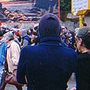
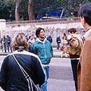
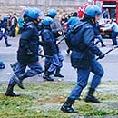
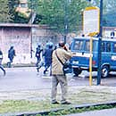
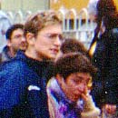
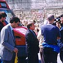

|
NAPOLI 24.499
Parte con la pioggia delle 11.30 la manifestazione corteo che anima la protesta napoletana contro la guerra in Kosovo. Un corteo di circa 1500 persone, gente, partiti, movimenti, centri sociali. Canti e molti striscioni, protesta moderata con al centro di un corteo dilatato dal passo e dalla pioggia, gli esponenti incazzati e a viso coperto; dietro e davanti i partiti, locali e nazionali. Arrivati alla svolta con Viale dei Giochi del Mediterraneo, dove si trova la sede della base N.A.T.O. napoletana, nostra meta, il blocco della polizia in assetto antisommossa ci fa capire che solo a Napoli non si può raggiungere il cancello di ingresso della base. Il cordone della polizia celerina ci tiene a 500 metri. Arrivati vicino, fronte a fronte, mi accorgo senza evidenza, che il centro incazzato ora si trova in testa al corteo, e i partiti non ci sono più. I caschi gialli, le aste delle bandiere sono bastoni. I fronti si preparano e misurano, i celerini alzano gli scudi, indietreggiano di qualche metro con l'avanzare del corteo, dal quale partono improvvisamente lattine e scatole da lampadine riempite di colore, rosso sangue, si alzano le urla, qualche sasso e un sanpietrino. Un momento prima la fine delle scorte di lattine, la carica della polizia, con tanto di furgoni di corsa e fumogeni. Varie persone travolte, manganellate alle spalle di un gruppo che appare più spaventato e giovane che cattivo e violento, due fermati e portati via, celerini cadono e si rialzano.
Una manciata di soli 45 secondi di violenza e manganellate, poi di nuovo ognuno dalla propria parte, si ricompongono le fila. Da un lato un esercito vestito di un brutto blu morte, organizzati e decisi, si sentono in guerra, ormoni di protagonismo. Dall'altro pochi personaggi estremisti, dentro e fuori voglia di lotta, ma troppa violenza per una manifestazione pacifista, il cui risultato immediato è quello di far scappare i moderati, le mamme, la gente comune che camminava nel corteo. Troppa poca organizzazione, nessun leader. Lunghi minuti di attesa, cassonetti portati con calma in prima fila. 100 metri di tensione palpabile, adrenalina, pianti e sangue, due o tre teste spaccate. Finalmente da dietro, dal corteo che nemmeno ha voluto passare il crocevia, arriva qualcuno, vanno a parlare con la polizia, e con i caschi gialli del gruppo più violento. Alla fine, tempo una mezzora, prevale il buonsenso, il dialogo, prevale la voce di un comizio improvvisato e impreciso caratterizzato da un impianto audio scarso, insufficiente. Il clima si rilassa, i celewrini si calmano, spengono i motori, piano piano i caschi gialli scompaiono, vanno via. Intanto è arrivato il sole, i manifestanti presenti si alternano il microfono, discorsi a braccio. Tra gli altri parla l'uomo travolto e picchiato, che promette denunce il mattino dopo; vola il nome di D'Alema più volte, e Cossutta, e il governo tutto nelle denuncie verbali di atti incostituzionali continui.
Il clima ormai tranquillo vede da un lato la polizia che si rilassa, alcuni di quei bravi ragazzi che si scambiano commenti e, pare, strategie sul movimento del braccio che porta il manganello. Dall'altro si rilassano con panini e birre i manifestanti, si sorride, anche se a denti stretti.
Verso le 14 va affievolendosi la scarsa voce dell'impianto, è passata troppa poca musica, lo pensano anche i numerosi musicisti presenti, solo voci distorte da quelle casse, un impianto di merda, e nessuno se ne preoccupa. E nel giro di altri 30 minuti, se ne va la gente, ce ne andiamo anche noi, passando tra le fila della polizia, ormai completamente rilassata, forse delusa (volevano picchiare ancora?), ci fanno passare guardandoci come pericolosi criminali, come merda, ma non rompono, e non commentano. Nel cielo un elicottero della polizia che ci ha accompagnato per tutta la presenza nella via della base ronza nemmeno troppo sommessamente, passaggi bassi, telecamera fuori. Sul tetto della base cinque personaggi, anche loro ci hanno accompagnato, uno di loro è un ufficiale, mi chiedo se stanno tessendo le fila dello svolgersi dei fatti in strada, ci guardano con il cannocchiale.
Non è stato un fallimento, non è stata una vittoria. Come gli ultimi anni hanno dimostrato quello che manca ora è l'organizzazione, l'unione che forse in passato c'era. Non ci filano proprio, soprattutto fino a che 1500 persone diventano 500 poi 300 per due lattine. Cari partiti manifestanti, se non volete davanti a voi ragazzi che tirano pietre, dovete stare davanti voi, e rispettare anche nella protesta chi vi vota. Come una signora che, subito dopo la carica, urla "davanti noi con i capelli grigi", a noi non ci picchiano, pensa, e comunque ha lo sguardo di chi si sente di rischiare. E lo fa perché ha la memoria di 20 anni fa, perché sa la storia, e non ne ha paura, ma orrore e voglia di continuare a lottare.
josotosan dalla manifestazione di Napoli, per/in acidlife
|